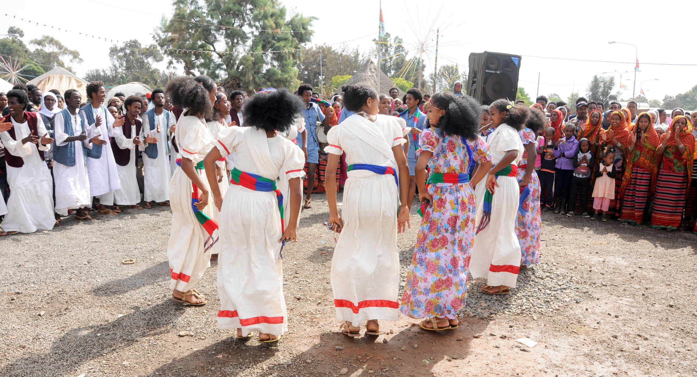

Farming

Eritrea is an agriculture-based country that supplies its people with a variety of production. The Eritrean Crops and Livestock Corporation (ECLC) manages national tasks particularly in producing cereals, milk, and meat for consumption.
Crops Growing

Other achievements include the successful testing of a micro-drip irrigation system in partnership with the College of Agriculture at the University of Asmara. The test showed food security rises with the use of the micro-drip system.
Traditional Dance
Guaila is as Eritrean as the baobab trees. Whenever five to ten Eritreans gather for dinner or lunch, the urge is always there to dance. Some sort of an impromptu dance. Guaila is most common during wedding seasons, especially in January.